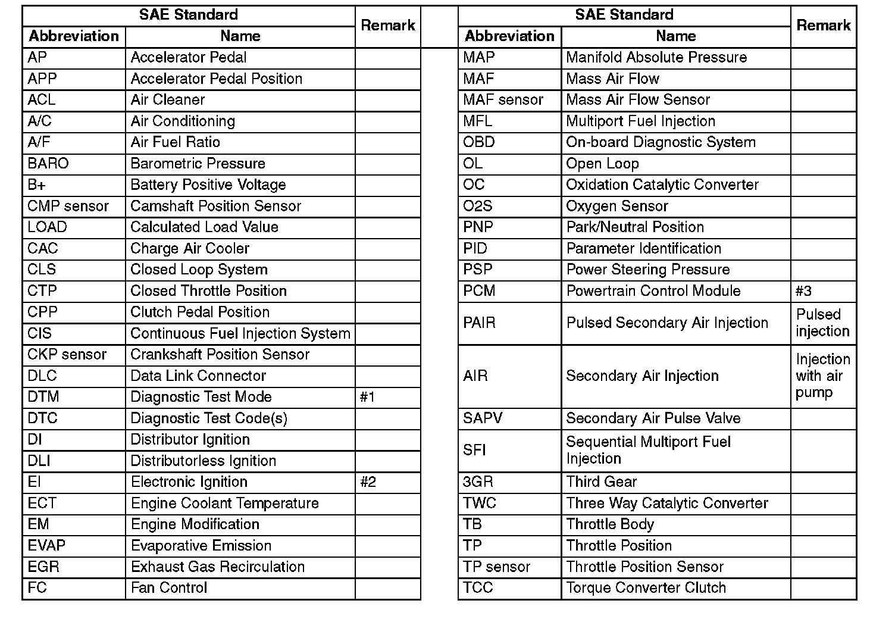
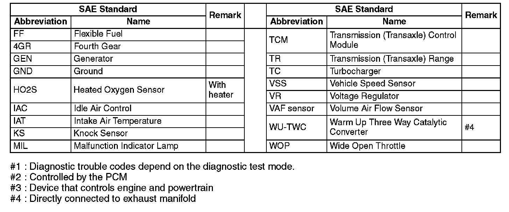

SAE Standards
SAE STANDARDS^ In accordance with new regulations, SAE (Society of Automotive Engineers) standard names and abbreviations are now used in this information. The table below lists the names and abbreviations that have been used in the Mazda information up to now and their SAE equivalents.

